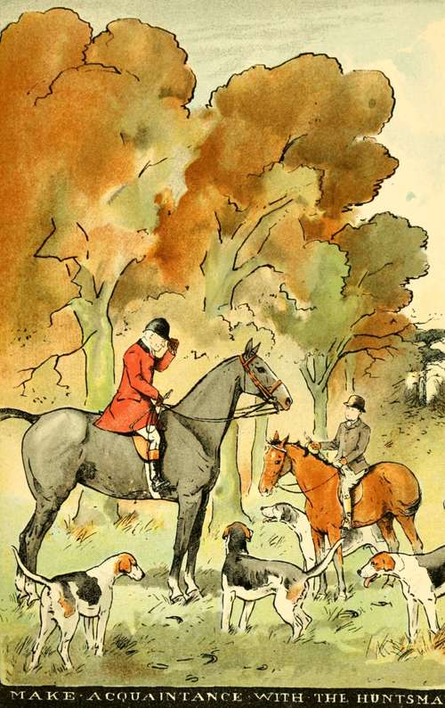
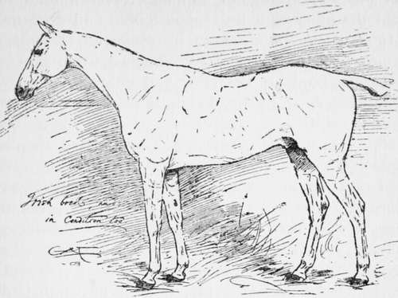

First Riding Lessons And The Hunting Field. Part 5
Description
This section is from the book "Horses, Guns, And Dogs", by J. Otho Paget, George A. B. Dewar A. B. Portman, And A. Innes Shand. Also available from Amazon: Horses, guns and dogs.
First Riding Lessons And The Hunting Field. Part 5
Never mind Jim now; hounds are running, and you are some fifty yards to the left of the main body. One moment, though, for a word of caution. You must not think because you have cleared a fair-sized bit of timber that your pony has no limitations in that direction. Do not over-face him or tax his powers beyond their capabilities, and if there is any choice always select the smallest place.
A half-open gate lets you through into the next field, which is a fallow, in preparation for the sowing of wheat. The freshly turned soil brings the pack to their noses, and now you must stand quite still. No ! don't turn round to see if any one is coming up, but keep your eyes glued on the hounds and watch what they are doing. Two very promising couple—all of one litter—of the young entry have been carrying the scent thus far, and now they must leave it to their elders to put them right. Swinging themselves forward they fail to touch the line, the reason being that the fox has turned short to the right for the smoother headland and to avoid the half-broken clods. Old Lavish, who had been left behind in covert, now comes up, and by aid of an excellent nose, assisted by the wisdom of age, speedily unravels the mystery.
At this check you had feared it was all over, and your spirits rise again when you see the pack fly to Lavish's tuneful note. The fence ahead appears a very simple affair, and the field beyond is old seeds. Your experience in the country—perhaps looking for blackberries—has taught you that the yellow grass and briars in front of the hedge you are now riding at will most probably conceal a ditch. This knowledge you expect to be shared by the pony, and, sticking in your heels, ride gaily at the obstacle. Crash ! bump ! The ground rises up suddenly and hits you a smack on the head. For the fraction of a second you are dazed, then jumping to your feet you clutch at the reins and prepare to remount. What happened ? Only a blind ditch, and you rode at it rather too fast, so that when the pony put his feet in the ditch he could not recover, and both of you rolled over the fence into the field beyond. Your nose is bleeding a little, and you have scratched your face, whilst your hat is smashed out of shape—but these are mere trifles. Climb on the pony as quick as you can, for the pack are only just disappearing through the next fence, and you will easily catch them up. Experience is a valuable tutor, and this little mishap will have taught you the necessity of riding slowly at a fence when the ditch facing you is concealed by grass or tangled briars.
The country now assumes a different aspect, for the estate we are crossing is in the owner's hands, and is a legacy from a sequence of bad tenants. A year or two ago it was under the plough, but now a thin covering of wiry twitch-grass has spread over the surface, and, as far as hunting is concerned, is not a bad substitute for turf. No ditches guard the straggling, ill-kempt hedges, which have many weak places, and you may ride at them with the fullest confidence.
For five or six fields hounds run fast over this sort of country, and you are just able to keep with them, though the pony is fast tiring, and his heaving sides tell you that a halt will soon be advisable. Make the most of your precious moments, though you will only realise in dreams for many days to come the period of divine ecstasy through which you have passed. There is a limit to the appreciation of any pleasure, and the cup is brimming now, though it will not run to waste, but will be absorbed by your brain; and you will live again through the incidents of the run.
The sun is gaining power, and a bare stubble-field brings the pack to their noses. Even to your inexperienced eye a crisis has been reached, and a little human intelligence will be required to assist hounds in their difficulty, but fortunately at this moment the huntsman and first whip appear.
What had happened to them ? The whip had been on the farther side of the wood and the huntsman had taken a fall in galloping down a boggy ride, his horse getting away from him. The second whip, who had holloaed the fox from the covert, was a new hand, and in his previous place had orders never to ride over a fence, but to go back for any hounds that were missing. Finding that the pack were two couple short, he went back into the wood to find them, and then assisted the huntsman to catch his horse. It thus happened that you and the horse-dealer were the only people to get away. Two or three early rising members of the hunt, who had turned up at the meet with severe punctuality, had found a sunny spot on the up-wind side of the wood, where they passed the time with cigarettes and conversation. When they hear of the gallop they will curse the huntsman for not blowing his horn ; but for the present we will leave them in happy ignorance of hounds' doings, and return to the check.
The huntsman sees there is no time to be lost, and, grasping the situation at a glance, he lifts the pack across the stubble-field. Beneath the shadow of the high hedge the ground is still moist from the morning dew, and hounds soon strike the smeuse where the fox has crept through. Another stubble and hounds can only slowly puzzle out the line, so that there is every chance of the hunt coming to a speedy end.
We are on the summit of some rising ground, and the country before us shelves away to a little stream below. Your eyes are young, and you should scan the landscape quickly for any moving object. There ! look ! what was that dark animal disappearing through the hedge two fields away ? For a moment you hesitate, and then the brain confirms the eye's first impression. You burst out with "Yonder he goes!" and to the huntsman's query of " Where ? " you point to the spot. Quick as thought he has the pack at his heels and gallops to the place you indicated, but before they reach it a flood of melody fills the air with joyous sound.
You were right, and now your pony has gained his second wind; bustle him along and see the end. Crash through that bullfinch, and you find yourself in a long meadow down which the brooks run. Hounds fly up the hedge-side, stop suddenly and turn back. Old Songster makes a dive into the ditch and out jumps the fox, getting a twenty-yard start before he is seen. Tally-ho ! the pack have viewed him, and are racing for his brush. Across the level meadow old hound and young are straining every sinew.
On the farther side of the brook is an open earth, which may mean safety to the fox, and to us the knell of all our hopes. Will they do it ? The excitement is intense. They are gaining on him, his stride is shortening, and now that young Belvoir dog is not a yard behind his brush. Another inch or two, a snap, a snarl, a worry, " Whoo-hoop !" and all is over.
Slacken your pony's girths, put the reins over his head, and fasten them to one stirrup-iron, then turn him loose well clear of the pack, and watch the fox being broken up. This performance over, and the huntsman approaches you with the trophies of the chase in his left hand, then he makes a pass with the right, you feel something wet on the cheek, and behold you are " blooded." Gratefully accepting both mask and brush, you fasten them to the saddle and ride slowly home.
Before you retire, however, there is one point you want explained, and, as the huntsman in this instance is unable to explain it, I will make it clear for you. You noticed that the fox you holloaed across the ride was not the same hounds killed, and the huntsman has told you it was the old vixen, whose head you are carrying away. This is what happened. A tired cub went away, but fortunately for him he found his mother lurking in a hedgerow some two fields away from the covert, when, acting on the maternal advice, he promptly laid down and left her to take his place. The poor old lady had been hovering about the neighbourhood in her anxiety for her family and hoping for an opportunity of this kind, but she had been considerably hustled before leaving the covert, and her strength was not equal to the task of getting away from hounds, so that she sacrificed her life for that of her offspring.
Arriving at the stable-yard, it is a proud moment for you when John the stud-groom, who taught you riding, comes out and sees the head dangling from the saddle. Of course he takes a great interest in Master George, and, like all the better class of grooms, is a very keen sportsman. You give him every detail and incident of the morning's sport, living it all over again in pouring out the story to sympathetic ears.
You may be pardoned for relating your prowess in the field to the family circle, but I need hardly tell you that a modest reticence with regard to these matters is more becoming when discussing it with friends. Not only must you never refer to your own personal deeds, but you must not allow yourself to imagine that your performance was in any way out of the common or meritorious. The next time you go hunting you will probably do something foolish, and never see hounds after they leave the covert. Conceit about anything is certain to lead sooner or later to a downfall, but in riding to hounds it is a sure pathway to a swift and humiliating retribution.

Continue to:
- prev: First Riding Lessons And The Hunting Field. Part 4
- Table of Contents
- next: Chapter III. The Choice Of A Horse And Its Handling